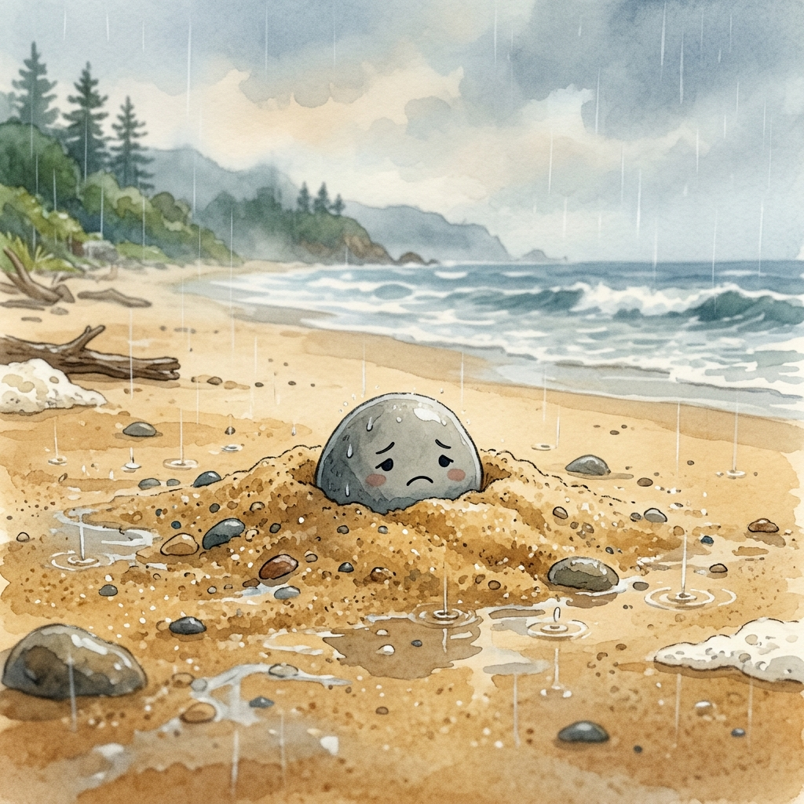
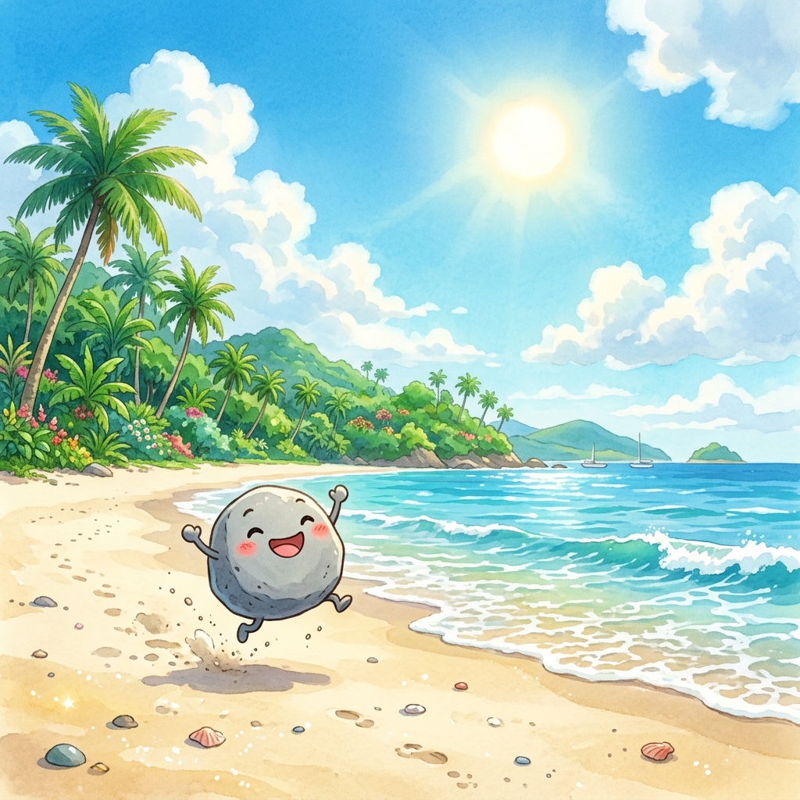

The Little Stone's Great Escape
Once upon a time, on a beautiful island, there lived a little stone. Unfortunately, it was buried deep within the beach sand. Only a tiny fraction—just 5% of it—peeped above the surface, while the remaining 95% was stuck firmly beneath the ground.
The little stone had a grand dream: it wanted to see the beauty of the world around it.

The Struggle
Every single day, the stone pushed and struggled, trying to escape the heavy grip of the sand, but it just couldn't break free. Days turned into weeks, but the stone refused to give up.
The Rainy Season
Eventually, the rainy season began. Even amidst the heavy downpours, the stone never stopped trying. The continuous drops of rain hitting the sand, combined with the stone's relentless effort, slowly began to change things.
After a month of rain, the stone noticed something amazing—it was now 40% visible! Looking around, it thought, "Wow, I can see so much more than before!"
Filled with new hope, the little stone put even more effort into pushing itself out. Months passed, and the rainy season continued. The continuous rain softened the ground, making the sand lose its strength. This helped the stone tremendously, and soon, it was 80% visible.
Victory

Finally, after another month of unwavering determination, the stone broke entirely free from the sand. For the first time, it could look around and see the world in a beautiful 360-degree view.
Overjoyed, the little stone jumped with happiness, realizing it had completely overcome its obstacle.